Super savet za komandu `fg`: kada Ctrl+Z spase vašu terminal sesiju
Објављено 18 April 2026
- Problem: zauzet terminal
- Tri neophodne komande
- Scenarij 1: dugi build
- Scenario 2: Zaboravljeni urednik
- Сценарио 3: Процесс opencode приостановљен
- Сценарио 4: Управљати више послова у истом времену
- Razlike između fg, bg, Ctrl+Z, Ctrl+C i &
- Potpun životni ciklus posla
- Napredni saveti
- ловушке и честе грешке
- Сводни дијаграм
- Zašto fg je podocenjen
- Zaključak
Vi bacate`./gradlew build`, terminal je blokiran za 3 minute, i vi trebate da uradite nešto drugo čekajući? Ne treba da otvorite novu karticu.`Ctrl+Z`zaustavljuje proces,`fg`Vraća vas tačno na mesto gde ste ga ostavili. To je najmanje cenjen Unix savet u svakodnevnom životu programera.
- так
-
[]
Problem: zauzet terminal
Svaki programer je doživio ovu situaciju:
$ ./gradlew build
> Building...Терминал је блокиран. Више не можете укуцати ниједну команду. И вам је потребно прегледати датотеку, покренути`git status`, или проверити заузети порт.
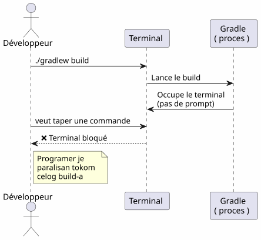
Većina programera otvara novi terminal. Ipak postoji rešenje koje je elegantnija, brža i prirodna: upravljanje poslovima.
Tri neophodne komande
Ctrl+Z — Zaustavi (SIGTSTP)
`Ctrl+Z`Šalje signal`SIGTSTP`процесу у передњем плану. Процес јеsuspendovan— ne ubijen — i terminal vraća svoj prompt.
$ ./gradlew build
> Building...
^Z
[1]+ Stoppé ./gradlew build
$Број између заграда`[1]`јеbroj posla. Le `+`ukazuje na podrazumevani posao
fg — Врати на предњи план
`fg`vraća zaustavljen posao u primarni plan. Proces se nastavlja tačno gde se je zaustavio.
$ fg
./gradlew build
> Building... (reprend où il en était)Sa specifičnim brojem posla :
$ fg %2bg — Nastavi u pozadini
`bg`Uzima proces bez blokiranja terminala. Idealno za dugograjde gradnje.
$ bg
[1]+ ./gradlew build &
$Le `&`Na kraju znači da se proces izvršava u pozadini.
jobs — Lista poslova u shellu
$ jobs
[1]- Stoppé vim README.md
[2]+ En cours ./gradlew build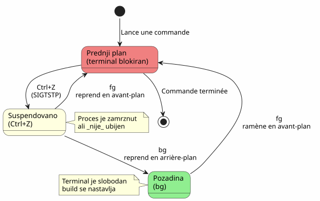
Scenarij 1: dugi build
Ovo je najčešći slučaj korištenja. Pokrenete Gradle build, terminal je blokiran, i morate da uradite nešto drugo.
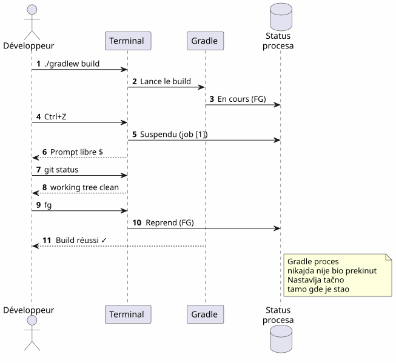
Korak po korak
$ ./gradlew build
> Building...
^Z
[1]+ Stoppé ./gradlew build
$ git status
On branch main
nothing to commit, working tree clean
$ fg
./gradlew build
> Building...
BUILD SUCCESSFUL in 2m 34sScenario 2: Zaboravljeni urednik
Vi ste u`vim`, trebate da pogledate drugi fajl bez napuštanja`vim`.
# Dans vim, en mode commande :
:shell
$ cat /path/to/other/file.txt
$ exit
# Retour dans vimAli je teško. Sa`Ctrl+Z`, to je odmah :
# Dans vim, n'importe quel moment :
Ctrl+Z
[1]+ Stoppé vim README.md
$ cat /path/to/other/file.txt
# ... lire le fichier ...
$ fg
vim README.md
# Retour exact là où on en était, curseur en place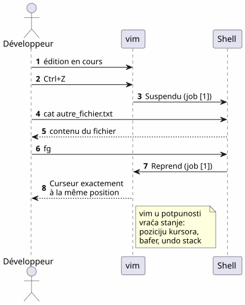
Белешка:`vim`savršeno vraća svoje stanje nakon`fg`: pozicija kurzora, sadržaj bafera, istorija poništavanja — sve je sačuvano.
Сценарио 3: Процесс opencode приостановљен
Ово је сценариј који је мотивао ovaj чланак. Ви користите`opencode`(CLI alat za pokretanje LLM na vašem kodu), a proces je zaustavljen.
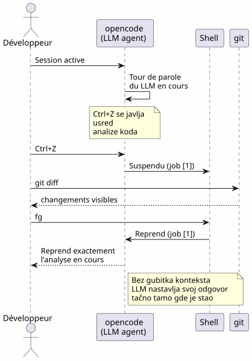
$ opencode
# ... session en cours, LLM analyse le code ...
^Z
[1]+ Stoppé opencode
$ git diff HEAD~1
# vérifier les changements récents
$ fg
opencode
# Le LLM reprend là où il s'était arrêtéПредност је двострука :
-
Нет губитка контекста: сесија LLM, историја разговора, отварені датотеке — све је сачувано
-
Никаког рестартане треба покретати опенкоде, не треба поновити контекст, не треба поново обяснити проблематицу LLM-у
Сценарио 4: Управљати више послова у истом времену
fg et `bg`Prihvataju broj posla za ciljanje specifičnog procesa kada je više procesa pozastavljen.
$ vim config.yml
^Z
[1]+ Stoppé vim config.yml
$ ./gradlew test
^Z
[2]+ Stoppé ./gradlew test
$ htop
^Z
[3]+ Stoppé htop
$ jobs
[1] Stoppé vim config.yml
[2]- Stoppé ./gradlew test
[3]+ Stoppé htop
$ fg %2
./gradlew test
# Le build reprend en avant-plan
$ bg %3
[3] htop &
# htop reprend en arrière-plan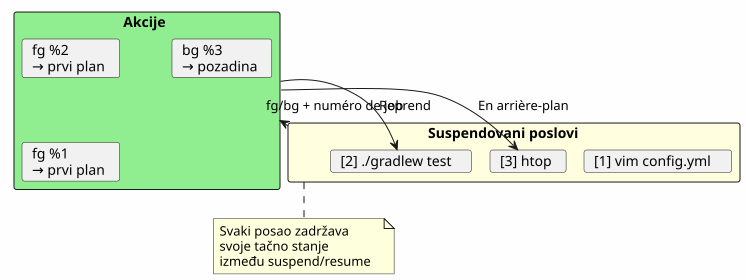
Свод наредби за poslove
| narudžba | efekat | primer |
|---|---|---|
|
Suspendiraj proces u prvom planu |
Slanje`SIGTSTP` |
|
Ponovo preuzima podrazumevani posao u primarnom planu |
|
|
Навести посао n у передњи план |
|
|
Продовити подразумевани задатак у позадини |
|
|
Врати посао n у позадни план |
|
|
Покажи радње текуће шелле |
|
|
Završi posao n |
|
Razlike između fg, bg, Ctrl+Z, Ctrl+C i &
Mnogo programera miješa ove mehanizme. Evo odlučnog objašnjenja.
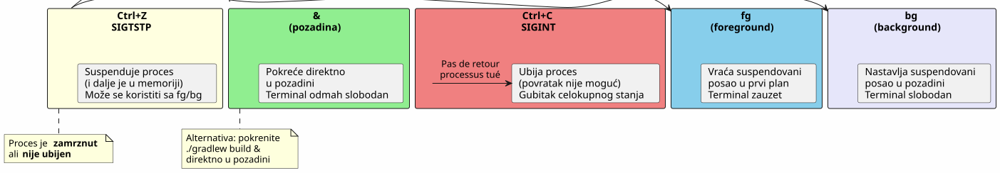
| Пречица/Команда | Signal | Efekat | Vratiti se nazad? |
|---|---|---|---|
|
|
Zaustavi proces (zamrznut, u memoriji) |
Да :`fg` ou |
|
|
Ubij proces (završen) |
Не : уништожен процес |
|
|
Zabij proces + core dump |
Ne: proces uništen |
|
— |
Pokreni u pozadini direktno |
`fg`da ga vrati u prednji plan |
Ctrl+Z`jeнедеструктиван. Proces je zaklepčen kako jest, u memoriji. Možete nastaviti odmah sa`fg. To je pauza, ne zaustavak.
|
Potpun životni ciklus posla
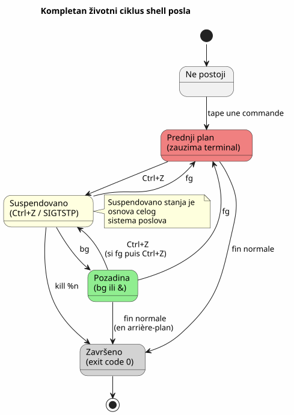
Napredni saveti
fg sa najnovijim poslom i alternativom
fg`Без аргумента враћа означени посао+`(najnoviji). Ali možete Takođe koristiti
Wait: I accidentally capitalized "Takođe". Should be lowercase "takođe". So correct: " (najnoviji). Ali možete takođe koristiti". Ensure "takođe" is lowercase. Yes.
Thus final output.
</think>
(najnoviji). Ali možete takođe koristiti`%-`da se usmeri na prethodni posao :
$ vim file1.txt
^Z
[1]+ Stoppé vim file1.txt
$ vim file2.txt
^Z
[2]+ Stoppé vim file2.txt
$ fg # ramène job [2] (le plus récent)
$ fg %- # ramène job [1] (le précédent)убити посао на правилан начин
$ jobs
[1]- Stoppé vim config.yml
[2]+ Stoppé ./gradlew test
$ kill %2 # envoie SIGTERM au job 2
$ kill -9 %1 # envoie SIGKILL au job 1 (force)disown : odvoji se od shell-a
disown`Ukloni posao iz tabele poslova shella. Proces nastavlja da se izvršava, ali ne može više biti vratio sa`fg:
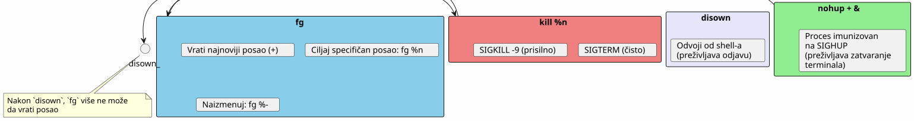
Kombinirati sa nohup za dugoke procese
Da bi proces preživio zatvaranje terminala:
$ nohup ./gradlew build &
[1] 12345
$ disown %1
# Le build continue même si vous fermez le terminal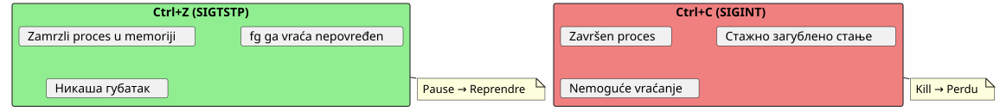
ловушке и честе грешке
Мешати Ctrl+Z и Ctrl+C
Ovo je najčešća greška.`Ctrl+C`ubija proces.`Ctrl+Z`Ga zaustavlja. Ako pritisnete na`Ctrl+C`iz refleksa, sve stanje je izgubljeno — otvoreni fajlovi, sesije LLM, gradnje u toku.
Poslovi su lokalni u shellu
jobs, fg et `bg`ne funkcionišu samo u shellu koji je pokrenuo procese. Ako otvorite novi terminal, nećete videti jobove drugog.
# Terminal 1
$ vim file.txt
^Z
[1]+ Stoppé vim file.txt
# Terminal 2 (nouveau)
$ jobs
# (rien — les jobs sont locaux au shell)Da biste videli sistemski procesi, koristite`ps` ou htop:
ps aux | grep vimPoslovi ne preživljavaju zatvaranje shell-a
Ako zatvorite terminal, svi suspenirani ili pozadinski poslovi su uništeni. Da biste proces preživi, koristite`nohup`+disown :
$ nohup ./gradlew build &
[1] 12345
$ disown %1
# Fermer le terminal → le build continueInteraktivni procesi i fg
Neki interaktivni programi nisu u dobrom stanju nakon jednog`Ctrl+Z`+fg. Ретко је, но дешава се :
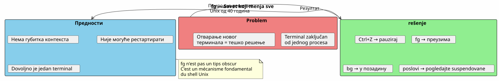
U slučaju oštećenog terminala nakon`fg`, ukucaj :
resetСводни дијаграм
Zašto fg je podocenjen
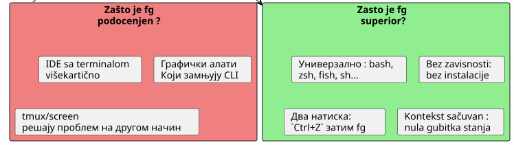
-
IDE sakrivaju terminal: VS Code nudi ugrađeni terminal, ali više kartica prave`fg`manje potrebno na prvi pogled
-
Grafički alati zamjenjuju CLI: управљачи фајловима, системски монитори, графички кlijenti Git
-
tmux i screen: ovi multipleskseri rešavaju isti problem na drugačiji način, ali`fg`je jednostavniji i uvek dostupan
Ipak,`fg`je :
-
универзалниprisutan u svim POSIX shell-ovima (bash, zsh, fish…)
-
Bez zavisnosti: нема потребе да инсталирате tmux или screen
-
Snimak: dva udara (
Ctrl+Z`zatim`fg) za zaustavljanje i nastavak -
Čuvac konteksta: stanje procesa je neporušeno
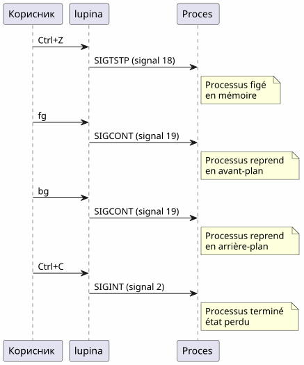
Za zainteresovane, voici signali koji su uključeni :
| Сигнал | Име | Poslao | Efekat |
|---|---|---|---|
2 |
|
|
Prekid — završava proces |
3 |
|
|
Napusti sa core dump |
18 |
|
|
Interaktivni stop — poništava proces |
19 |
|
|
Nastavi — ponovo pokreće suspendovan proces |
15 |
|
|
Правилан завршатак |
9 |
|
|
Prisilno završavanje (ne može se prekinuti) |
Потпун поток :
Zaključak
`fg`Nije sakriven savet — to je fundamentalni mehanizam Unix shella, dostupan od 70-h godina. Činjenica da većina razvojara to ignoriše je simptom našeg doba: IDE i multiplexeri nas su udaljiti od osnova.
Повезани чланци
18 May 2026